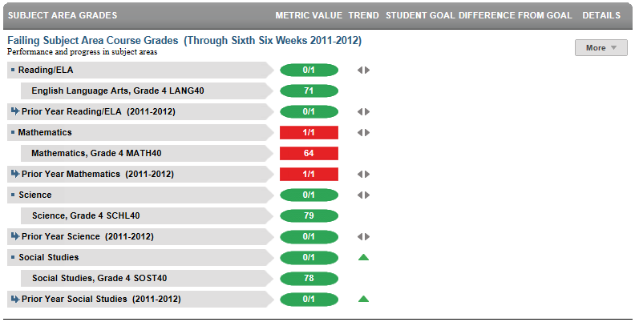

Dashboard Metrics


Failing Subject Area Course Grades
Background
Student Dashboard Metrics
Because of the need to closely monitor course performance, many school districts across the nation, including Chicago, Dallas and New York, have incorporated metrics on course performance and associated credit accumulation into their internal performance management dashboards. In addition, during focus groups conducted with educators, the Class Grades metrics, which are the high school equivalent of subject area grades, were considered useful by 96% of those surveyed.
Primary Metric
- Failing Subject Area Course Grades: grades for each of the core subject areas for a student.
Related Metric
- none
User Interface
Dashboard Example
Figure 1 shows the Subject Area Course Grades metric as seen on the student dashboard.

Figure 1 Ed-Fi Subject Area Course Grades Metric
Status Definition
The Status indicator is determined by campus-specific thresholds (campus goals) which are set at the district level. The Ed-Fi default thresholds for passing/failing a course are defined in Table 2.
Metric Indicator | Trend Comparisons | |||
Metric Name | Sub-metric Name | Metric Status Indicator (a) | Compares: | To: |
Subject Area Course Grades | Reading/ELA | Red (Below) = One or more courses are failing Green (Met Goal) = All grades are passing (E, S, N or > 70) | Subject grades for the current grading period | Subject grades for the prior grading period |
Writing | Red (Below) = One or more courses are failing Green (Met Goal) = All grades are passing (E, S, N or > 70) | Subject grades for the current grading period | Subject grades for the prior grading period | |
Mathematics | Red (Below) = One or more courses are failing Green (Met Goal) = All grades are passing (E, S, N or > 70) | Subject grades for the current grading period | Subject grades for the prior grading period | |
Science | Red (Below) = One or more courses are failing Green (Met Goal) = All grades are passing (E, S, N or > 70) | Subject grades for the current grading period | Subject grades for the prior grading period | |
Social Studies | Red (Below) = One or more courses are failing Green (Met Goal) = All grades are passing (E, S, N or > 70) | Subject grades for the current grading period | Subject grades for the prior grading period | |
(a) The Value column displays the actual grade (letter or numeric) in the subject.
Trend Definition
In the full Ed-Fi implementation, if the first grading period is not complete, Ed-Fi shows prior year with final grades for each subject. When the first grading period is complete, the trend shows the difference between first grading period and final year grade from the prior year.
Table 3 lists the trend indicators. The trend is not implemented for Phase 2; this table is for documentation purposes.
Trend Indicators: Objective is to indicate Course Grades | |||
| Up green | If the subject area grade status was "below" in the prior grading period and is "met goal" in the current grading period | |
| Unchanged | If there is no change in the subject area grade status. | |
| Down red | If the subject area grade status was "met goal" in the prior grading period and "below" (failing) in the current grading period | |
Trends do not display for the first grading period as data is not available.
Trends do not display if data is available for less than two grading periods.
Periodicity
The data is most actionable when loaded at the end of each grading period after grades are posted. Grading periods vary by state and district.
Recommended Load Characteristics | |
Calendar | Throughout the school year |
Frequency of data load | Grading period |
Latency | Grading period |
Interchange schema | Interchange-StudentGrade.xsd |
Tooltips
The standard tool tips for the Subject Area Course Grade metric definition, column headers, and help functions display for this metric.
The following are tooltips specific to the Subject Area Course Grades metric:
 is ‘No change from the prior period’
is ‘No change from the prior period’ is ‘Getting worse from the prior period'
is ‘Getting worse from the prior period' is ‘Getting better from the prior period'
is ‘Getting better from the prior period'
Business Rules
The Subject Area Course Grade metric indicates how well a student is doing in their subject area courses during the current school year. Ed-Fi must be able to interpret any type of elementary school grade (such as numeric or letter) and convert the grade in order to determine whether or not the grade is failing.
Data Assumptions
- Student grade information is available for multiple grading periods for the current year. If the grade information is unavailable, the values are blank.
- Student grade information is available throughout the grade level.
- Grades for each student are based on the latest grading period.
- Course grades are numeric or letter-based.
- District sets the value that drives the student thresholds for pass/fail (numeric and/or letter grade).
Computed Values
The high level metrics displays the number of grades failing out of the total number of grades for that particular course area. The submetrics display the course titles and the actual grades for each course and therefore will have no computed values.
Data Anomalies
Anomalies
Best practice is to footnote these anomalies:
- Loading of data from each grading period
- Late enrollees may not have previous grading period grades from another school
- Missing transcripts for transfer students.
- If a grade level only gives grades for part of the year (i.e. first graders receive grades starting in January), several things may appear odd on the dashboards. First the current courses may change mid-year for these students once the grade book changes. Second, the campus and district metrics may change dramatically mid-year to include these new students.
Footnotes
- Best practice is to note late enrollee students that have not been present for a full grading period
- Missing transcripts for transfer students
Date of Refresh
Best practice is for the date of last data refresh to appear next the metric in the following format:
- (Through Second Six Weeks)
Implementation Considerations
Student Identity
Maintaining a correct and consistent student identity is at the center of any education data system. Most systems use some sort of unique identifier. However, sometimes this identifier is entered incorrectly or sometimes different systems use different identifiers.
The UDM XML supports the interchange of multiple types of identifiers. The StudentReference is a complex type within the UDM to maintain the referential integrity of the student (that is, ensuring that the data associated with each student is accurately associated with the right student). The complex type of the student reference assists with implementing the accurate matching algorithm to identify a student by utilizing any of the individual attributes (e.g., Student Unique State ID, Student ID, Campus Local ID (with Campus ID), Name and Birth Date). For example, if the Student Unique State ID is unknown, you can find the student’s identity by their Student ID, First Name, Last Name and Birth Date.
Attendance and Grade Metrics for Elementary School
Ed-Fi uses a student's assignment to formal class periods to determine both attendance and grades. Most elementary schools do not have a standard methodology for capturing attendance data. A teacher may take attendance in the classroom, but not formally record it. The same is true for grades, especially in kindergarten and first grade. In most cases, Ed-Fi metrics will not display attendance data for these grade levels and grades may not display in the metrics until the end of the year, if at all.
Numeric or Letter Grading System
Best practice is for the metric to support both numeric and letter grading systems.
Late Enrollments
For late enrollment students, consider whether or not there is previous grading period data to compare to the latest grading period.
Frequency of Uploading Data
The metric computation implementation may vary depending on the periodicity of loading the data.
Current Grading Period
Data for the current grading period must exist for the course grades metric to exist.
Courses with the same title but different course codes
It is possible to have courses withe the same title but different course codes. If the student is currently enrolled in both courses and has grades for both courses then both should display. The display should read 'Course title - Course code"
Drill Downs
Description
The "+More" option on the dashboard provides access to the Student Academic Profile drill down page which provides current and historical course level grades to aid in identifying courses where the student is struggling.
Drill Down Views
The dashboards include the option to see more detail that is associated with a specific metric. Table 5 lists the drill down views that are recommended for this metric.
| Historical | Student Academic Profile displaying the student’s course and grade history by grading period, semester, and year. |
Dashboard Example
Figure 2 shows historical Grades as seen in the Ed-Fi dashboards.
Figure 2 Ed-Fi Historical Grades
Business Rules
The Historical Graph allows the user to see historical data across multiple timeframes. As time passes, there are many bars to be displayed; therefore, the slider on the bottom allows the user to adjust the number of bars displayed as well as the time period shown. The timeframes for this metric were chosen based on educator feedback.